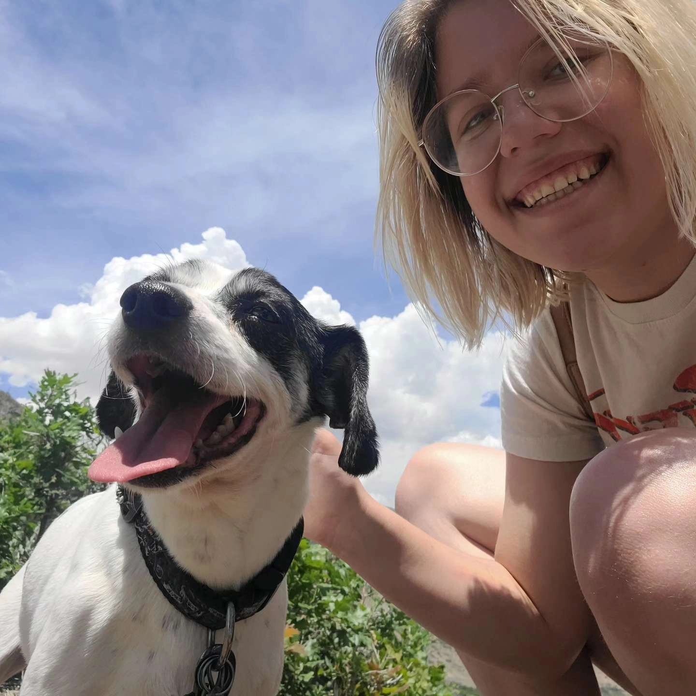
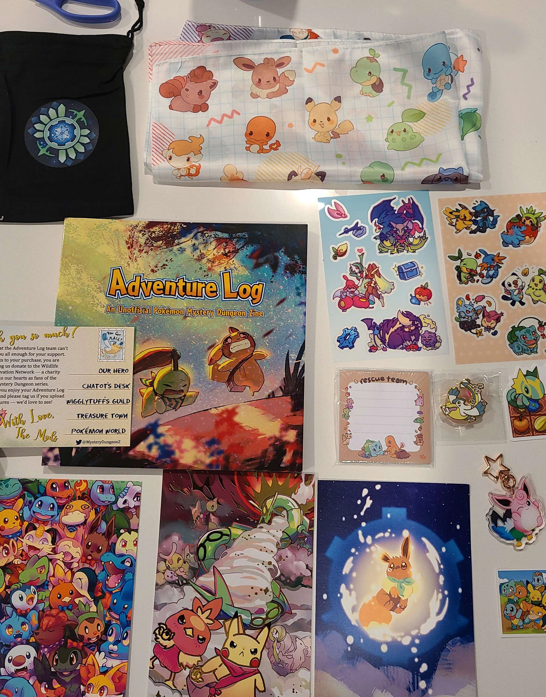
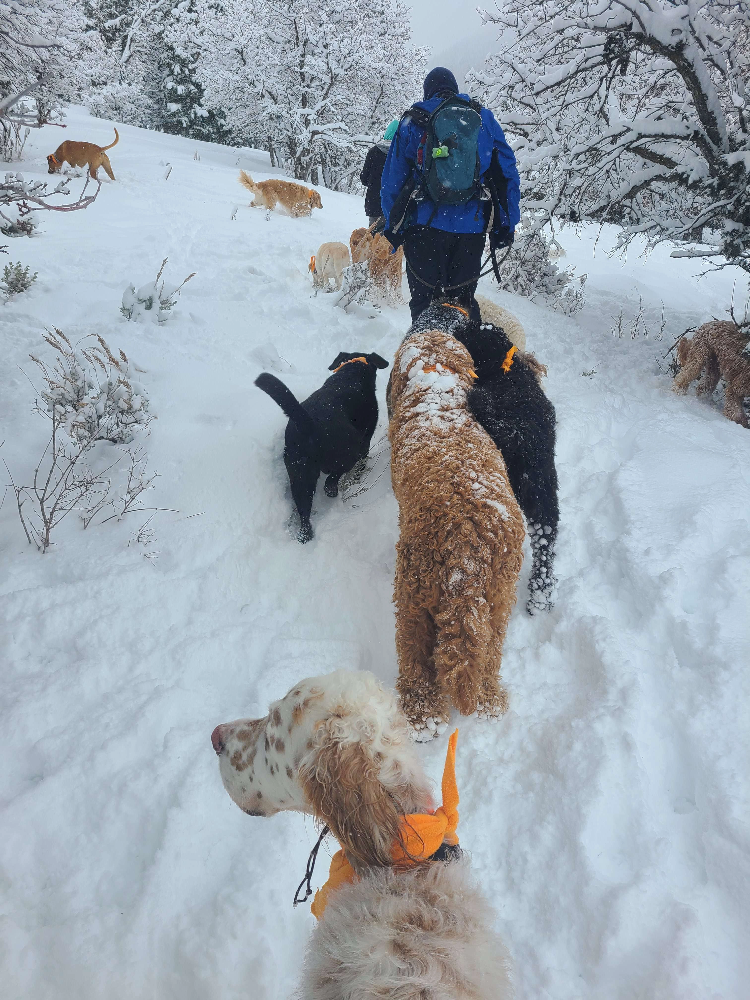

I love working in multimedia and creating breathtaking experiences! I have been drawing for all of my life and picking up any artistic skill that I can since then. I have five Adobe Associate certifications and have actively created responsive video games and websites for years. I love finding ways to combine different mediums to create something new and immersive, and I want to bring my work into all sorts of mediums and fields — video games, websites, video production, comics, wherever I can!
I couldn't imagine my life without animals in it! I worked professionally in the pet industry for years, and I still give back to the community by fostering and volunteering through local animal nonprofits. Dogs have such a special place in my heart in particular — they are so playful and endearing, and they've taught me so much about loving life and being present. I especially love my dog Harley (he's in the picture); he's my goofy little best friend!

Animal Activist
Animal Activist
I couldn't imagine my life without animals in it! I worked professionally in the pet industry for years, and I still give back to the community by fostering and volunteering through local animal nonprofits. Dogs have such a special place in my heart in particular — they are so playful and endearing, and they've taught me so much about loving life and being present. I especially love my dog Harley (he's in the picture); he's my goofy little best friend!
When I was six years old, a video game spin-off series, Pokemon Mystery Dungeon, inspired my love for art and video games. I fell in love with the lively narrative and gameplay, and I have always wanted to create an experience to felt just as special. I've loved Pokemon games ever since, but some of my other favorite games are Psychonauts 2, Animal Crossing, Fe, and RPGMaker horror games such as Omori and Ib.

Favorite Games
Favorite Games
When I was six years old, a video game spin-off series, Pokemon Mystery Dungeon, inspired my love for art and video games. I fell in love with the lively narrative and gameplay, and I have always wanted to create an experience to felt just as special. I've loved Pokemon games ever since, but some of my other favorite games are Psychonauts 2, Animal Crossing, Fe, and RPGMaker horror games such as Omori and Ib.
I love coffee; I love nature! Both are huge sources of fun and comfort for me. Especially by living in Utah, I love taking advantage of the beautiful mountains here! In the warmer months, I love exploring hiking trails, planning picnics, and making flower crowns for my friends. I also love the cozy mumblings of a coffee shop and seeing which place can serve the best chai. Coffee shops are my favorite spaces for productivity and staying connected with local communities.

Nature & Coffee
Nature & Coffee
I love coffee; I love nature! Both are huge sources of fun and comfort for me. Especially by living in Utah, I love taking advantage of the beautiful mountains here! In the warmer months, I love exploring hiking trails, planning picnics, and making flower crowns for my friends. I also love the cozy mumblings of a coffee shop and seeing which place can serve the best chai. Coffee shops are my favorite spaces for productivity and staying connected with local communities.
Life is about learning! I love approaching life by wanting to try new things, especially if my friends are involved. Just from the last year, I picked up skateboarding, bouldering, hand-painting hoodies, and discovering new movies and music through my friends. Change is incredible, and I couldn't stay driven without finding something new and exciting to do. I do my best to stay open-minded to life's opportunities and making every day a new adventure.

Lifelong Learner
Lifelong Learner